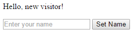

Cookies sin Express ni cookie-parser (HTTP NodeJS)
En este apartado vamos a ver y a explicar cómo hacer un ejemplo del uso de cookies sin el uso de express ni parser.
Primero, necesitaremos instalar el módulo Cookies. Dicho módulo es un módulo node.js para obtener y configurar cookies HTTP(S). Las cookies se pueden firmar para evitar la manipulación, utilizando Keygrip. Puede utilizarse con la biblioteca HTTP node.js incorporada o con el middleware Connect/Express.
La instalación se realiza mediante el comando npm install:
$ npm install cookies
API
var cookie = require('cookie');
cookie.parse(str, options)
Analiza una cadena del header de cookies HTTP y devuelve un objeto de todos los pares nombre-valor de cookie. El argumento str es la cadena que representa un valor de encabezado Cookie y las opciones son un objeto opcional que contiene opciones de análisis adicionales.
var cookies = cookie.parse('foo=bar; equation=E%3Dmc%5E2');
// { foo: 'bar', equation: 'E=mc^2' }
escape-html
Otro módulo necesario es el escape-html. Cadena de escape para el uso en HTML.
La instalación se realiza mediante el comando npm install:
$ npm install escape-html
API
var escapeHtml = require('escape-html');
http
Utilizaremos el módulo http para iniciar un simple servidor con Node.js para nuestro ejemplo. El servidor va a ser capaz de tomar la solicitud que envió a través del navegador, y también responder a las solicitudes que le envió.
API
var http = require('http');
Código ejemplo:
http.createServer(onRequest).listen(3000);
url
Por útimo, el módulo url. Este módulo tiene utilidades para la resolución de URL y analizar significados para tener paridad de característica con el módulo de url del núcleo de node.js.
API
var url = require('url');
url.parse(urlStr, [parseQueryString], [slashesDenoteHost])
Toma una cadena de URL y devuelva un objeto.
Pasamos true como el segundo argumento para analizar también la cadena de consulta utilizando el módulo querystring. El valor predeterminado es false.
Pasamos true como el tercer argumento para tratar //foo/bar como {host: 'foo', pathname: '/ bar'} en lugar de {pathname: '//foo/bar'}. El valor predeterminado es false.
Obviamente, cada uno de los módulos que hemos nombrado tienen una mayor cantidad
de APIs, pero sólo hemos mostrado las que usaremos para el uso de nuestro ejemplo.
Ejemplo
Código ejemplo:
var cookie = require('cookie');
var escapeHtml = require('escape-html');
var http = require('http');
var url = require('url');
var form = `
<form method="GET">
<input placeholder="Enter your name" name="name">
<input type="submit" value="Set Name">
</form>
`;
function onRequest(req, res) {
console.log(req.url);
// Parse the query string
var query = url.parse(req.url, true, true).query;
console.log(query);
if (query && query.name) {
// Set a new cookie with the name
res.setHeader('Set-Cookie', cookie.serialize('name', String(query.name), {
httpOnly: true,
maxAge: 60 * 60 * 24 * 7 // 1 week
}));
// Redirect back after setting cookie
res.statusCode = 302;
res.setHeader('Location', req.headers.referer || '/');
res.end();
return;
}
// Parse the cookies on the request
var cookies = cookie.parse(req.headers.cookie || '');
// Get the visitor name set in the cookie
var name = cookies.name;
res.setHeader('Content-Type', 'text/html; charset=UTF-8');
if (name) {
res.write(`<p>Welcome back, <b> ${escapeHtml(name)} </b>!</p>`);
} else {
res.write('<p>Hello, new visitor!</p>');
}
res.write(form);
res.end();
}
http.createServer(onRequest).listen(3000);
Testeando el ejemplo
- Creamos un fichero llamado
coockiesNoExpress.js(por ejemplo), y copiamos el código anterior en el mismo. - Ejecutamos el comando:
$ npm init. - Ejecutamos el comando:
$ npm install --save cookie. - Ejecutamos el comando:
$ npm install --save escape-html. - Ejecutamos el comando:
$ node coockiesNoExpress.js.
Tras ejecutar el comando del punto 5, el servidor comenzará a correr en nuestro puerto 3000. Si accedemos a un navegador e introducimos la url localhost:3000 accederemos a la página de nuestro ejemplo con una vista tal que así:

Tras añadir cualquier nombre en el campo de texto, por ejemplo "chuchu", y clickar en "Set Name", podemos comprobar que el resultado ahora es:
Como podemos ver, la coockie ha guardado el nombre solicitado al usuario y lo ha mostrado a continuación, reconociendo que el usuario que ha entrado a la página web es "Kevin".